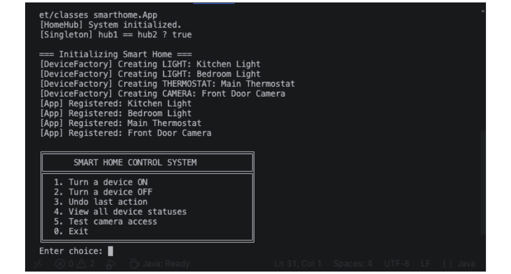
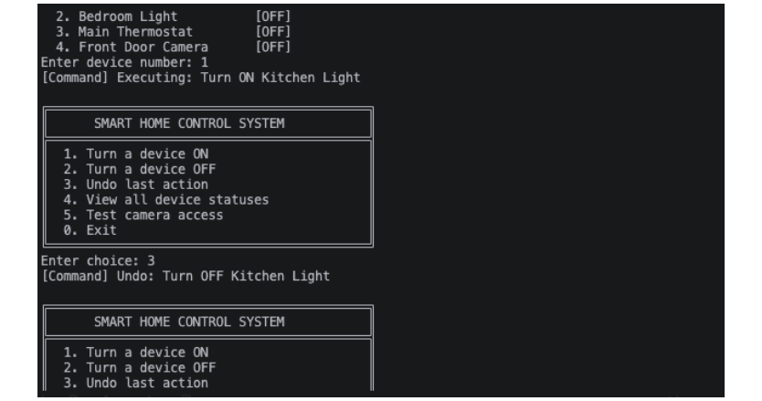
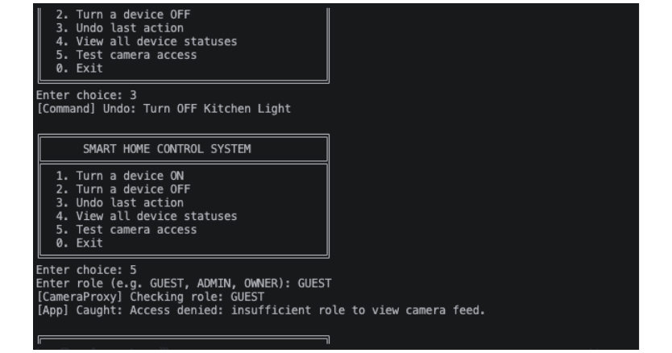
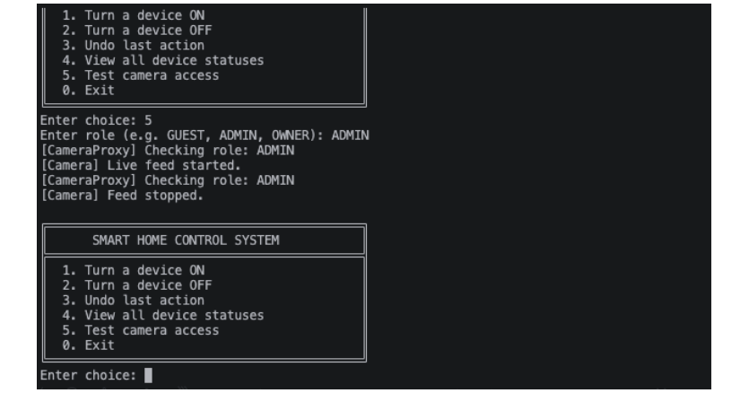

Smart Home Control System
A Java console application that manages a home's smart devices through one central hub. It was built to show how four Gang of Four design patterns solve real structural problems in a single, working system.
The problems and the patterns
- No structure: devices were created and referenced everywhere. Singleton
(
HomeHub) gives one central hub, and Factory Method (DeviceFactory) is the only place devices are created. - No safety: anyone could view the camera. Proxy
(
CameraProxy) checks the user's role and denies guests. - No undo: actions were permanent. Command
(
TurnOnLightCommand,TurnOffLightCommandandHomeAutomationRemote) keeps a history stack so any light action can be undone.
The app runs as a numbered console menu: turn a light on or off, undo the last action, view all device statuses, or test camera access as GUEST, ADMIN or OWNER. It uses only the Java standard library.
Screenshots
Application startup. The two hub references point to the same object, and the factory creates all four devices.

Undo. The last light command is popped from the history stack and reversed.

Camera access denied for a GUEST.

Camera access granted for an ADMIN.

Challenges
-
SmartDeviceis an interface, so it cannot be instantiated directly. The factory solves this by always returning a concrete subclass (Light,ThermostatorCamera). - The Command classes only work with lights, because thermostats and cameras have more complex state. The app checks the device type before using the pattern.
- The real camera service is created lazily, only after the proxy has granted access, so the role check can never be bypassed.